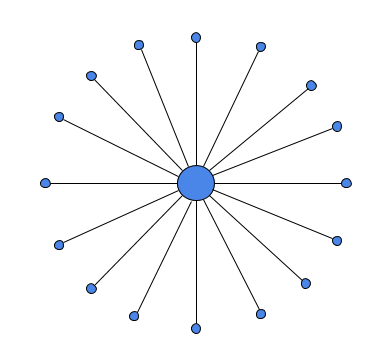

Facebook knows exactly how many users are on their platform. Amazon knows exactly how many products are sold. Instagram knows exactly how many photos are shared.
In contrast, no one knows how many people use Bitcoin. No one knows how many files have been shared over Bittorrent. No one knows how many trades happen on OpenBazaar.
Why can some networks give precise statistics about how they’re being used, while others can only give estimations or have no data at all? It comes down to the architecture of the networks.
Centralized Networks
If you build a centralized network – and you control the center of the network – you then have access to information about everything that is happening. Centralized systems require all users to connect to a central point of control, and whoever sits at point of control is able to monitor and collect as much data as they please.
 Centralized network with central point of control
Most platforms on the internet today are centralized, and the central point of control is managed by a company. This is how Facebook, Amazon, and most platforms operate. Those companies sit in the center and collect as much information as they can about their users.
On the positive side, this allows them to have precise statistics and answer specific questions about how their platform is being used, which makes it easier for them to improve and satisfy users’ needs.
On the negative side, it means the users on centralized platforms have no privacy from whoever manages the central point of control, and they don’t always use the data they gather just to improve their platform. They sometimes sell the data to others, or even lose the data if someone breaks into the databases.
Distributed networks
Distributed networks are fundamentally different from centralized networks. There is no central point of control in a distributed network. All users in the network are equal to other users, and users connect directly to each other. Each user is running software on their computer which connects them to the network, and that computer is called a “node” in the network.
Few platforms on the internet today are distributed, but they are growing in number. Bitcoin and other cryptocurrencies are distributed networks. OpenBazaar is distributed, as is Bittorrent. No one can sit in the center and collect information about users on these networks; there is no center at all.
 Distributed network with no center
Distributed network with no center
On the positive side, this means that users have much more privacy on distributed networks. They aren’t required to connect and share information with a central point of control. They connect directly to other peers and exchange information directly, without necessarily informing others on the network about what they’re doing.
On the negative side, this makes collecting statistics very difficult, which makes development more difficult. Those building the platform cannot see how users are using their product, and must seek other methods to know how best to improve the product.
How Do Nodes Work?
Individual users set up and control their own nodes, generally from their own personal computers. They have to allow incoming and outgoing connections to participate in the network and connecting to other nodes takes some time.
One of the difficulties in collecting stats from distributed networks is the fact that most nodes on the network will only connect to a handful of peers at a time. If the network has 1,500 nodes running, each individual node might only be connected to eight or ten other nodes, meaning they only see a small fraction of the overall network.
This means that getting an overview of the entire network is difficult, and requires lots of nodes that are connected to different peers. Or it requires a method to “crawl” through the network and look at the state over time and not as a single snapshot.
Distributed networks also present another difficulty in stats gathering: churn. Nodes can join and leave the network at any time because users can set up or delete their stores at any time. In centralized systems people joining and leaving is simple to notice, since they are either communicating with the central point of control or they aren’t. In distributed networks you don’t see all other nodes simultaneously and won’t know what’s happening on another part of the network. Even if you were able to perfectly capture the state of the network at one moment, it will likely change in the next moment.
This is further complicated by distributed networks that don’t require nodes to be running 24/7, such as OpenBazaar (built on IPFS). This is a good thing and was a major feature built into the version 2.0 release so that sellers’ stores are still accessible and buyers’ orders can still be processed even if the seller is technically offline, but it complicates the stats. Any attempt at gathering information about the state of the network by looking at online nodes only will be missing the fact that these offline users are still a part of the network.
OpenBazaar Usage & Stats
We can partially answer some questions about the OpenBazaar network with indirect data. For example, while we don’t know how many trades occur, we can see when a user leaves a review on a completed purchase. This gives us a very broad range to make estimations from, but is imprecise.
We try to ascertain node count (the number of computers running the OpenBazaar software), but for the reasons noted above this is difficult. We can only see the number of nodes online and accepting incoming connections (users who have port forwarded), which is a small subset of overall OpenBazaar users.
This is a limitation from the developer’s perspective, but it’s a feature from the user’s perspective. We built OpenBazaar to be private and it should remain so for people who value their privacy.
Opt-in Stats Gathering
We believe we’ve figured out a way to retain the privacy of OpenBazaar users while still allowing for relevant stats gathering to aid development. In the 2.2.0 release we introduced an opt-in stats gathering feature. Users are asked when they start the app if they’d like to share anonymous statistics with the OpenBazaar development team, and a list of the data shared is displayed. If users decline then no information is shared. If they accept then only the data that’s displayed will be shared.
This data has already been helpful to the developers and over time will help us answer many questions that would have been impossible otherwise, due to OpenBazaar’s distributed design. Here are a few numbers we have been able to see over the last couple of weeks:
- Over 1,600 opt-ins since launch – Roughly 15% of users running version 2.2.0
- Of this segment who opted in, visitors from 103 countries have driven over 4,500 sessions
- English is the language chosen by 68% of users who opted in; Russian, German and Spanish are all at 6% each
OpenBazaar is a network that exists for its users and is run by its users. In this marketplace, buyers & sellers have greater control over their experience than in any other marketplace on the planet. We want to know how to make it the best it can be for you–without stepping on your toes.
Help us all make OpenBazaar better and drive forward the capabilities of decentralized platforms by opting into sharing anonymized usage stats.
Download it now by clicking here.
Do you want to help build this with us?
Download OpenBazaar right now to get buying or selling in minutes or join us on Github to contribute to the development of this open-source project!